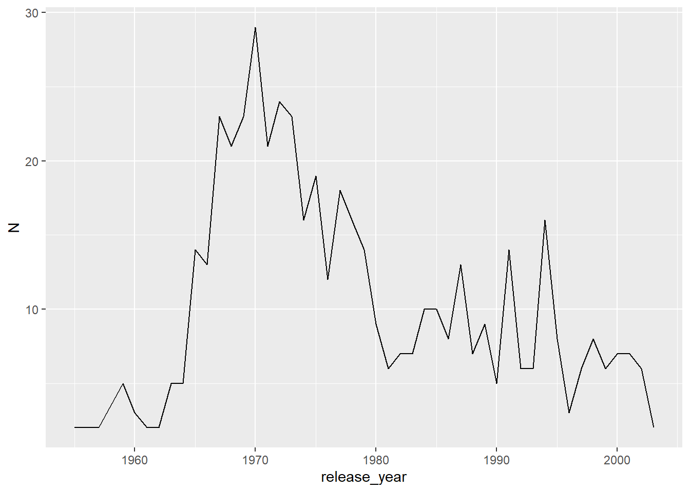
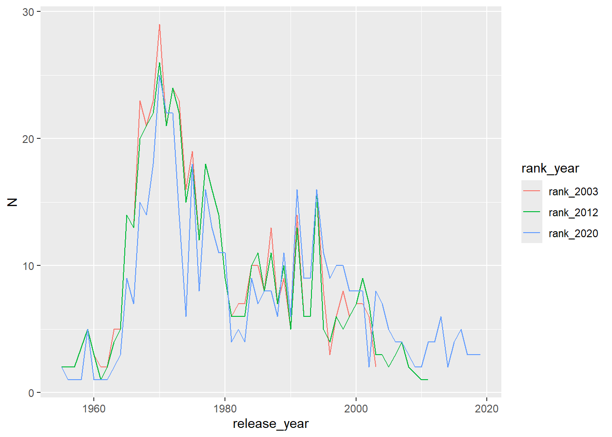
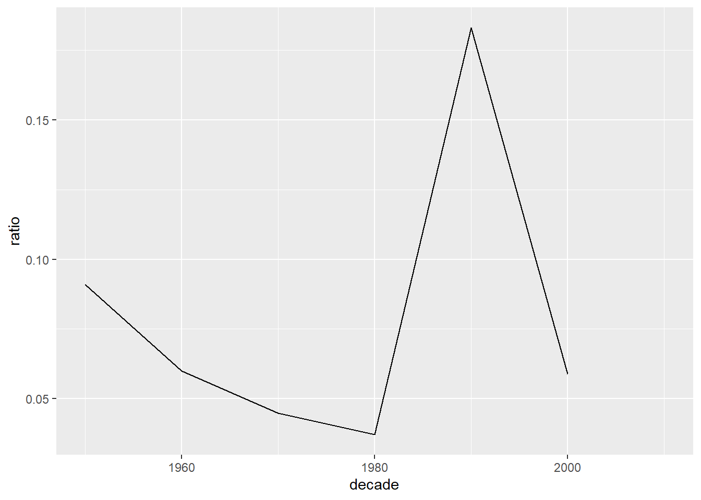

my_data |>
mutate(new_column = old_column*2)Introduction to data.table
What is data.table?
At its core, data.table provides an enhanced version of data.frames that are faster, more memory efficient and can be manipulated using a more concise syntax. It also provides a whole set of extra functions for reading from and writing to tabular files, reshaping data between long and wide formats, joining datasets and much more.
Why data.table?
- Fast and efficient
- Does not have dependencies
- Syntax is very concise
- Ensures backwards compatibility
Reference semantics
Most R functions and methods uses copy-on-modify. This means that modifying an object almost always creates a new copy of the object, while the original one is kept unmodified. For example this code
returns a new tibble that is a copy of my_data with a new column but it doesn’t modify my_data.
data.table uses modify-in-place, which means that objects are not copied whene modified. This code
my_data[, new_column := old_column*2]doesn’t create a new copy of my_data but it rather modifies my_data directly. This is similar to the base R code:
my_data$new_column <- data$new_columnModify-in-place is one of the features that makes data.table so efficient, but it can also make code harder to think about and lead to surprising results (especially if a data.table is modified inside a function).
Functions that modify a data.table in place start with “set”, like setcolorder() (reorders columns) or setnames() (renames columns).
Reading data with data.table
The first step of most data analyses is to read data in memory. We can use the data.table::fread() function (the f is for fast) to read regular delimited files such as csv files. This function not only is fast, but it automatically detects the delimiter and guesses the class of each column and the number of rows in the file.
library(data.table)rolling_stone <- fread('data/rolling_stone.csv')It is also possible to read data from a URL.
rolling_stone <- fread('https://raw.githubusercontent.com/rfordatascience/tidytuesday/master/data/2024/2024-05-07/rolling_stone.csv')fread() will return a data.table object. If you read a dataset as a data.frame or tibble and want to create it as a But sometimes you’ll have a data.frame or a tibble that you loaded into R using other methods. You can convert them to data.table either with the as.data.table() or setDT() functions. The difference is that as.data.table() returns a copy of the data as a data.table and setDT() changes the data in place (as it is expected by the “set” prefix).
setDT(rolling_stone)The Rolling Stone data
The data we’ll use comes from the TidyTuesday project, includes album rankings from Rolling Stone magazine. It has 21 variables and 691 observations, not a big task for data.table but it will help us to explore some of the funtionalities.
str(rolling_stone)Classes 'data.table' and 'data.frame': 691 obs. of 21 variables:
$ sort_name : chr "Sinatra, Frank" "Diddley, Bo" "Presley, Elvis" "Sinatra, Frank" ...
$ clean_name : chr "Frank Sinatra" "Bo Diddley" "Elvis Presley" "Frank Sinatra" ...
$ album : chr "In the Wee Small Hours" "Bo Diddley / Go Bo Diddley" "Elvis Presley" "Songs for Swingin' Lovers!" ...
$ rank_2003 : int 100 214 55 306 50 NA NA 421 NA 12 ...
$ rank_2012 : int 101 216 56 308 50 NA 451 420 NA 12 ...
$ rank_2020 : int 282 455 332 NA 227 32 33 NA 68 31 ...
$ differential : int -182 -241 -277 -195 -177 469 468 -80 433 -19 ...
$ release_year : int 1955 1955 1956 1956 1957 2016 2006 1957 1985 1959 ...
$ genre : chr "Big Band/Jazz" "Rock n' Roll/Rhythm & Blues" "Rock n' Roll/Rhythm & Blues" "Big Band/Jazz" ...
$ type : chr "Studio" "Studio" "Studio" "Studio" ...
$ weeks_on_billboard : int 14 NA 100 NA 5 87 173 NA 27 NA ...
$ peak_billboard_position : int 2 201 1 2 13 1 2 201 30 201 ...
$ spotify_popularity : int 48 50 58 62 64 73 67 47 75 52 ...
$ spotify_url : chr "spotify:album:3GmwKB1tgPZgXeRJZSm9WX" "spotify:album:1cbtDEwxCjMhglb49OgNBR" "spotify:album:7GXP5OhYyPVLmcVfO9Iqin" "spotify:album:4kca7vXd1Wo5GE2DMafvMc" ...
$ artist_member_count : int 1 1 1 1 1 1 1 4 1 1 ...
$ artist_gender : chr "Male" "Male" "Male" "Male" ...
$ artist_birth_year_sum : int 1915 1928 1935 1915 1932 1981 1983 7752 1958 1926 ...
$ debut_album_release_year: int 1946 1955 1956 1946 1957 2003 2003 1957 1978 1951 ...
$ ave_age_at_top_500 : num 40 27 21 41 25 35 23 19 27 33 ...
$ years_between : int 9 0 0 10 0 13 3 0 7 8 ...
$ album_id : chr "3GmwKB1tgPZgXeRJZSm9WX" "1cbtDEwxCjMhglb49OgNBR" "7GXP5OhYyPVLmcVfO9Iqin" "4kca7vXd1Wo5GE2DMafvMc" ...
- attr(*, ".internal.selfref")=<externalptr> The syntax
The general data.table syntax looks like this:
DT[i, j, by]
Where DT is a data.table object, the i argument is used for filtering and joining operations, the j argument can summarise and transform, and the by argument defines the groups to which to apply these operations.
You can read the syntax as “In these rows, do this, grouped by that”. It is very concise but easy to read (sometimes).
Let’s start operating over i, meaning over the rows of the table.
Subset rows in i
Which is the number one album in the 2003 ranking? We need to filter our dataset to show only rows where rank_2003 is 1:
rolling_stone[rank_2003 == 1]| sort_name | clean_name | album | rank_2003 | rank_2012 | rank_2020 | differential | release_year | genre | type | weeks_on_billboard | peak_billboard_position | spotify_popularity | spotify_url | artist_member_count | artist_gender | artist_birth_year_sum | debut_album_release_year | ave_age_at_top_500 | years_between | album_id |
|---|---|---|---|---|---|---|---|---|---|---|---|---|---|---|---|---|---|---|---|---|
| Beatles | The Beatles | Sgt. Pepper’s Lonely Hearts Club Band | 1 | 1 | 24 | -23 | 1967 | Studio | 233 | 1 | 71 | spotify:album:6QaVfG1pHYl1z15ZxkvVDW | 4 | Male | 7765 | 1963 | 25.75 | 4 | 6QaVfG1pHYl1z15ZxkvVDW |
This is similar to how we’d use a regular data.frame:
rolling_stone[rolling_stone$rank_2003 == 1]| sort_name | clean_name | album | rank_2003 | rank_2012 | rank_2020 | differential | release_year | genre | type | weeks_on_billboard | peak_billboard_position | spotify_popularity | spotify_url | artist_member_count | artist_gender | artist_birth_year_sum | debut_album_release_year | ave_age_at_top_500 | years_between | album_id |
|---|---|---|---|---|---|---|---|---|---|---|---|---|---|---|---|---|---|---|---|---|
| Beatles | The Beatles | Sgt. Pepper’s Lonely Hearts Club Band | 1 | 1 | 24 | -23 | 1967 | Studio | 233 | 1 | 71 | spotify:album:6QaVfG1pHYl1z15ZxkvVDW | 4 | Male | 7765 | 1963 | 25.75 | 4 | 6QaVfG1pHYl1z15ZxkvVDW |
But because all expressions in i are evaluated in the context of the data.table, we don’t need to type the name of the data.frame again. This becomes even more convenient with longer expressions. For example, what are the female bands with more than 3 members?
rolling_stone[artist_gender == "Female" & artist_member_count > 3]| sort_name | clean_name | album | rank_2003 | rank_2012 | rank_2020 | differential | release_year | genre | type | weeks_on_billboard | peak_billboard_position | spotify_popularity | spotify_url | artist_member_count | artist_gender | artist_birth_year_sum | debut_album_release_year | ave_age_at_top_500 | years_between | album_id |
|---|---|---|---|---|---|---|---|---|---|---|---|---|---|---|---|---|---|---|---|---|
| Destiny’s Child | Destiny’s Child | The Writing’s On the Wall | NA | NA | 291 | 210 | 1999 | Studio | 99 | 5 | 73 | spotify:album:283NWqNsCA9GwVHrJk59CG | 4 | Female | 7924 | 1998 | 18.0 | 1 | 283NWqNsCA9GwVHrJk59CG | |
| Raincoats | The Raincoats | The Raincoats | NA | NA | 398 | 103 | 1979 | Punk/Post-Punk/New Wave/Power Pop | Studio | NA | 201 | 39 | spotify:album:190Tx9jPHndq0qUlq79BJJ | 4 | Female | 7814 | 1979 | 25.5 | 0 | 190Tx9jPHndq0qUlq79BJJ |
| Go Gos | The Go-Go’s | Beauty and the Beat | 413 | 414 | 400 | 13 | 1981 | Punk/Post-Punk/New Wave/Power Pop | Studio | 72 | 1 | 56 | spotify:album:1L4HE00En7eNK74voVZums | 5 | Female | 9785 | 1981 | 24.0 | 0 | 1L4HE00En7eNK74voVZums |
| Ross, Diana & the Supremes | The Supremes | Anthology | 431 | 423 | 452 | -21 | 2001 | Soul/Gospel/R&B | Greatest Hits | NA | 201 | NA | 5 | Female | 9713 | 1962 | 58.4 | 39 | NOS121 |
It is also possible to order de rows by any of the columns (we hide the output because it’s too long).
rolling_stone[order(rank_2003)]Filter some rows!
- Is your favourite band/artist listed in the data?
Show one solution
rolling_stone[clean_name == "your fav band here"]- How many albums got first position the Billboard magazine ranking?
Show one solution
rolling_stone[peak_billboard_position == 1]Operating with column(s) in j
Filtering and ordering is fun an all, but we need to operate on the columns. Just for fun, what is the mean ranking in 2003?
rolling_stone[, mean(rank_2003, na.rm = TRUE)][1] 250.504Data.table is not type-stable
Notice that the result of the last expression is a single numeric vector and not a data.table. Operations in j will return a data.table if the result of the expression is a list or a data.table, and other objects if the result is a single object of a different type.
Now, the mean of the numbers 1 through 500 is 250.5, so this results tells us that something strange is going on. Some ranking seems to be missing. How many unique elements do we have? The uniqueN() function is from data.table and is a more efficient version of doing length(unique(rank_2003)).
rolling_stone[, uniqueN(rank_2003, na.rm = TRUE)][1] 498Huh. We seem to be missing two ranking2?
Your turn
Which rankings are missing in the database?
Show one solution
rolling_stone[, which(!(1:500 %in% rank_2003))]
It’s probably more interesting to calculate the mean rank by genre. Let’s first compute the mean of just one genre.
rolling_stone[genre == "Electronic", mean(rank_2003, na.rm = TRUE)][1] 376.4286data.table is very efficient at subsetting rows and doing calculations over columns. For this expression:
rolling_stone[genre == "Electronic", mean(rank_2003, na.rm = TRUE)]data.table:
- find the row indices that match
genre == "Electronic". It does not subset over the entire table. - as j uses only one column to compute the mean, data.table subsets only that column and compute the mean.
data.table can see all three components of the query (i, j and by) and optimise it altogether before evaluation, not each separately.
There are a lot of genres so it would’t be too convenient to write one line for each one. It’s much better to group rows by genre using by:
rolling_stone[, mean(rank_2003, na.rm = TRUE), by = genre]| genre | V1 |
|---|---|
| Big Band/Jazz | 197.4000 |
| Rock n’ Roll/Rhythm & Blues | 169.3000 |
| 243.4080 | |
| Soul/Gospel/R&B | 226.2667 |
| Hip-Hop/Rap | 297.5000 |
| Blues/Blues Rock | 233.2667 |
| Country/Folk/Country Rock/Folk Rock | 207.3611 |
| Indie/Alternative Rock | 299.9143 |
| Punk/Post-Punk/New Wave/Power Pop | 293.1690 |
| Electronic | 376.4286 |
| Funk/Disco | 185.7333 |
| Latin | 260.0000 |
| Hard Rock/Metal | 246.2400 |
| Singer-Songwriter/Heartland Rock | 275.9231 |
| Blues/Blues ROck | 122.0000 |
| Reggae | 190.8571 |
| Afrobeat | NaN |
When doing stuff with by, the result is always a data.table with the columns used to define the groups and columns to store the results. If we don’t give it any names, data.table assigns the defaults V1, V2, etc. This is fine for quick one-liners, but for regular code it’s much better to name the results. We do this by returning a named list:
rolling_stone[, list(mean_rank = mean(rank_2003, na.rm = TRUE)), by = genre]| genre | mean_rank |
|---|---|
| Big Band/Jazz | 197.4000 |
| Rock n’ Roll/Rhythm & Blues | 169.3000 |
| 243.4080 | |
| Soul/Gospel/R&B | 226.2667 |
| Hip-Hop/Rap | 297.5000 |
| Blues/Blues Rock | 233.2667 |
| Country/Folk/Country Rock/Folk Rock | 207.3611 |
| Indie/Alternative Rock | 299.9143 |
| Punk/Post-Punk/New Wave/Power Pop | 293.1690 |
| Electronic | 376.4286 |
| Funk/Disco | 185.7333 |
| Latin | 260.0000 |
| Hard Rock/Metal | 246.2400 |
| Singer-Songwriter/Heartland Rock | 275.9231 |
| Blues/Blues ROck | 122.0000 |
| Reggae | 190.8571 |
| Afrobeat | NaN |
This idiom is so common that data.table allows us to use . as an alias for list, so most of the time you’d see something like this:
rolling_stone[, .(mean_rank = mean(rank_2003, na.rm = TRUE)), by = genre]| genre | mean_rank |
|---|---|
| Big Band/Jazz | 197.4000 |
| Rock n’ Roll/Rhythm & Blues | 169.3000 |
| 243.4080 | |
| Soul/Gospel/R&B | 226.2667 |
| Hip-Hop/Rap | 297.5000 |
| Blues/Blues Rock | 233.2667 |
| Country/Folk/Country Rock/Folk Rock | 207.3611 |
| Indie/Alternative Rock | 299.9143 |
| Punk/Post-Punk/New Wave/Power Pop | 293.1690 |
| Electronic | 376.4286 |
| Funk/Disco | 185.7333 |
| Latin | 260.0000 |
| Hard Rock/Metal | 246.2400 |
| Singer-Songwriter/Heartland Rock | 275.9231 |
| Blues/Blues ROck | 122.0000 |
| Reggae | 190.8571 |
| Afrobeat | NaN |
As long as j-expression returns a list, each element of the list will be converted to a column in the resulting data.table. This allows us to return more than one summary expression. What is the mean rank and number of bands included in the rank per genre?
rolling_stone[, .(mean_rank = mean(rank_2003, na.rm = TRUE),
N = sum(!is.na(rank_2003))),
by = genre]| genre | mean_rank | N |
|---|---|---|
| Big Band/Jazz | 197.4000 | 10 |
| Rock n’ Roll/Rhythm & Blues | 169.3000 | 10 |
| 243.4080 | 125 | |
| Soul/Gospel/R&B | 226.2667 | 45 |
| Hip-Hop/Rap | 297.5000 | 26 |
| Blues/Blues Rock | 233.2667 | 60 |
| Country/Folk/Country Rock/Folk Rock | 207.3611 | 36 |
| Indie/Alternative Rock | 299.9143 | 35 |
| Punk/Post-Punk/New Wave/Power Pop | 293.1690 | 71 |
| Electronic | 376.4286 | 7 |
| Funk/Disco | 185.7333 | 15 |
| Latin | 260.0000 | 1 |
| Hard Rock/Metal | 246.2400 | 25 |
| Singer-Songwriter/Heartland Rock | 275.9231 | 26 |
| Blues/Blues ROck | 122.0000 | 1 |
| Reggae | 190.8571 | 7 |
| Afrobeat | NaN | 0 |
Some of the genres are relatively highly rated, but have very few examples included.
You can select only some columns using the same syntax but without applying any summary function. To return a data.table with just the columns sort_name and rank_2003 you’d do:
rolling_stone[, .(sort_name, rank_2003)]You might’ve noticed that “Blues/Blues Rock” also appears as “Blues/Blues ROck”. Someone made a typo! We need to modify the genre column to fix that mistake. One way would be to turn all genres to all lower case and forget about cases altogether.
rolling_stone[, genre := tolower(genre)]This operator := is called “walrus”. It can be used to update existing columns (like we just did) or to create new ones. It is possible also to delete columns with DT[, variable := NULL].
Notice that we didn’t get any output and we didn’t assigned the result. But rolling_stone is modified anyway:
rolling_stone[, .(mean_rank = mean(rank_2003, na.rm = TRUE)), by = genre]| genre | mean_rank |
|---|---|
| big band/jazz | 197.4000 |
| rock n’ roll/rhythm & blues | 169.3000 |
| 243.4080 | |
| soul/gospel/r&b | 226.2667 |
| hip-hop/rap | 297.5000 |
| blues/blues rock | 231.4426 |
| country/folk/country rock/folk rock | 207.3611 |
| indie/alternative rock | 299.9143 |
| punk/post-punk/new wave/power pop | 293.1690 |
| electronic | 376.4286 |
| funk/disco | 185.7333 |
| latin | 260.0000 |
| hard rock/metal | 246.2400 |
| singer-songwriter/heartland rock | 275.9231 |
| reggae | 190.8571 |
| afrobeat | NaN |
The := operator modifies columns by reference, so the rolling_stone variable is modified in place instead of making a copy. This makes it very efficient, but potentially surprising!
Your turn
How may bands in the Latin genre appeared in the raking of 2020?
Show one solution
rolling_stone[genre == "latin", sum(!is.na(rank_2020))]What the average of the birth year for each artist or band?
Show one solution
rolling_stone[, artist_birth_year_mean := artist_birth_year_sum/artist_member_count]What is the mean raking of each album over the years?
Show one solution
rolling_stone[, mean_raking := mean(c(rank_2003, rank_2012, rank_2020), na.rm = TRUE), by = album_id]
Putting it all together
Up to now we made one operation at a time but it would be useful to chain operations (like you would do with dplyr for example). Let’s say we want to order genres by their mean ranking in 2003.
We can chain operations with data.table by continuing to use [:
rolling_stone[, .(mean_rank = mean(rank_2003, na.rm = TRUE)), by = genre][order(mean_rank)]| genre | mean_rank |
|---|---|
| rock n’ roll/rhythm & blues | 169.3000 |
| funk/disco | 185.7333 |
| reggae | 190.8571 |
| big band/jazz | 197.4000 |
| country/folk/country rock/folk rock | 207.3611 |
| soul/gospel/r&b | 226.2667 |
| blues/blues rock | 231.4426 |
| 243.4080 | |
| hard rock/metal | 246.2400 |
| latin | 260.0000 |
| singer-songwriter/heartland rock | 275.9231 |
| punk/post-punk/new wave/power pop | 293.1690 |
| hip-hop/rap | 297.5000 |
| indie/alternative rock | 299.9143 |
| electronic | 376.4286 |
| afrobeat | NaN |
Or like this for better readability:
rolling_stone[, .(mean_rank = mean(rank_2003, na.rm = TRUE)), by = genre
][order(mean_rank)]There are other possibilities, like using a pipe operator. You could use the old and wise magrittr pipe %>% along with . as a placeholder which, within a magrittr pipe, refers to the result of the previous step.
rolling_stone[, .(mean_rank = mean(rank_2003, na.rm = TRUE)), by = genre] %>%
.[order(mean_rank)]It is very important to distinguish between the . as alias for list() an the . as a placeholder within the magrittr pipe.
Using the native pipe |> before R 4.3.0 was more tricky as the pipe didn’t have a placeholder. But since that R version the native pipe supports a _ placeholder to the right-hand side fo the pipe:
rolling_stone[, .(mean_rank = mean(rank_2003, na.rm = TRUE)), by = genre] |>
_[order(mean_rank)]Now you can chain operations using any of the options. We’ll stick to the |> as is what we usually use.
Let’s get serious about analysing this data. It would be interesting to add the proportion as well as the number of albums in each genre:
rolling_stone[, .(mean_rank = mean(rank_2003, na.rm = TRUE),
N = sum(!is.na(rank_2003))), by = genre] |>
_[, prop := N/sum(N)] |>
_[order(-prop)]| genre | mean_rank | N | prop |
|---|---|---|---|
| 243.4080 | 125 | 0.250 | |
| punk/post-punk/new wave/power pop | 293.1690 | 71 | 0.142 |
| blues/blues rock | 231.4426 | 61 | 0.122 |
| soul/gospel/r&b | 226.2667 | 45 | 0.090 |
| country/folk/country rock/folk rock | 207.3611 | 36 | 0.072 |
| indie/alternative rock | 299.9143 | 35 | 0.070 |
| hip-hop/rap | 297.5000 | 26 | 0.052 |
| singer-songwriter/heartland rock | 275.9231 | 26 | 0.052 |
| hard rock/metal | 246.2400 | 25 | 0.050 |
| funk/disco | 185.7333 | 15 | 0.030 |
| big band/jazz | 197.4000 | 10 | 0.020 |
| rock n’ roll/rhythm & blues | 169.3000 | 10 | 0.020 |
| electronic | 376.4286 | 7 | 0.014 |
| reggae | 190.8571 | 7 | 0.014 |
| latin | 260.0000 | 1 | 0.002 |
| afrobeat | NaN | 0 | 0.000 |
A full 25% of bands (125) in the 2003 ranking have no assigned genre. Having a empty label is not ideal, let’s modify the variable.
rolling_stone[, .(mean_rank = mean(rank_2003, na.rm = TRUE),
N = sum(!is.na(rank_2003))), by = genre] |>
_[, prop := N/sum(N)] |>
_[, genre := ifelse(genre == "", "unknown genre", genre)] |>
_[order(-prop)] | genre | mean_rank | N | prop |
|---|---|---|---|
| unknown genre | 243.4080 | 125 | 0.250 |
| punk/post-punk/new wave/power pop | 293.1690 | 71 | 0.142 |
| blues/blues rock | 231.4426 | 61 | 0.122 |
| soul/gospel/r&b | 226.2667 | 45 | 0.090 |
| country/folk/country rock/folk rock | 207.3611 | 36 | 0.072 |
| indie/alternative rock | 299.9143 | 35 | 0.070 |
| hip-hop/rap | 297.5000 | 26 | 0.052 |
| singer-songwriter/heartland rock | 275.9231 | 26 | 0.052 |
| hard rock/metal | 246.2400 | 25 | 0.050 |
| funk/disco | 185.7333 | 15 | 0.030 |
| big band/jazz | 197.4000 | 10 | 0.020 |
| rock n’ roll/rhythm & blues | 169.3000 | 10 | 0.020 |
| electronic | 376.4286 | 7 | 0.014 |
| reggae | 190.8571 | 7 | 0.014 |
| latin | 260.0000 | 1 | 0.002 |
| afrobeat | NaN | 0 | 0.000 |
When doing lot’s of column modifications like in the previous lines, it’s more convenient (and sometimes more efficient) to do all the modifications in a single step. For that we can use the let() function, which is like a functional form of the walrus operator that can assign multiple columns at once:
rolling_stone[, .(mean_rank = mean(rank_2003, na.rm = TRUE),
N = sum(!is.na(rank_2003))), by = genre] |>
_[, let(prop = N/sum(N),
genre = fifelse(genre == "", "unknown genre", genre))] |>
_[order(-prop)] | genre | mean_rank | N | prop |
|---|---|---|---|
| unknown genre | 243.4080 | 125 | 0.250 |
| punk/post-punk/new wave/power pop | 293.1690 | 71 | 0.142 |
| blues/blues rock | 231.4426 | 61 | 0.122 |
| soul/gospel/r&b | 226.2667 | 45 | 0.090 |
| country/folk/country rock/folk rock | 207.3611 | 36 | 0.072 |
| indie/alternative rock | 299.9143 | 35 | 0.070 |
| hip-hop/rap | 297.5000 | 26 | 0.052 |
| singer-songwriter/heartland rock | 275.9231 | 26 | 0.052 |
| hard rock/metal | 246.2400 | 25 | 0.050 |
| funk/disco | 185.7333 | 15 | 0.030 |
| big band/jazz | 197.4000 | 10 | 0.020 |
| rock n’ roll/rhythm & blues | 169.3000 | 10 | 0.020 |
| electronic | 376.4286 | 7 | 0.014 |
| reggae | 190.8571 | 7 | 0.014 |
| latin | 260.0000 | 1 | 0.002 |
| afrobeat | NaN | 0 | 0.000 |
You will probably find examples where a quoted walrus":=" is used instead of the function let(). This is a functional form of the walrus operator that allows you to operate over more that one column at the same time.
Looking at numbers in a table is not always enough. Let’s plot the results.
library(ggplot2) #Or any another package to make plots
rolling_stone[, .(mean_rank = mean(rank_2003, na.rm = TRUE),
N = sum(!is.na(rank_2003))), by = genre] |>
_[, let(prop = N/sum(N),
genre = ifelse(genre == "", "unknown genre", genre))] |>
_[order(-prop)] |>
_[, genre := forcats::fct_reorder(genre, prop)] |>
ggplot(aes(prop, genre)) +
geom_col()
That’s right, you can pipe in a plot after doing the calculations.
Your turn
Are bands more successful than solo artists?
Show one solution
rolling_stone[, is_band := artist_member_count > 1] |> _[, .(mean_rank_2003 = mean(rank_2003, na.rm = TRUE), mean_rank_2012 = mean(rank_2012, na.rm = TRUE), mean_rank_2020 = mean(rank_2020, na.rm = TRUE)), by = is_band] # Notice that due to reference semantics, this operation adds the # is_band column to the data.table. You can avoid this by using # an expression in the by argument. rolling_stone |> _[, .(mean_rank_2003 = mean(rank_2003, na.rm = TRUE), mean_rank_2012 = mean(rank_2012, na.rm = TRUE), mean_rank_2020 = mean(rank_2020, na.rm = TRUE)), by = .(is_band = artist_member_count > 1)]What is the proportion of albums recorded in a Studio and their mean position in 2020?
Show one solution
rolling_stone[, .(mean_rank_2020 = mean(rank_2020, na.rm = TRUE), N = sum(!is.na(rank_2020))), by = type] |> _[, prop := N/sum(N)]What is the mean number of years between an artist debut album and the release of their first top 500 album (see the column
years_between) for each genre?Show one solution
rolling_stone[, .(mean_years = mean(years_between, na.rm = TRUE), .N), by = genre] |> _[order(mean_years)]
Special symbols
data.table has special symbols that provide extra functionality. We are going to only mention .N , which counts the number of rows in the group and it is particularly useful when used along with by.
How many albums per year were included in the 2003 ranking? To answer this question we can first filter only albums that were included in the 2003 ranking and then count the number of rows per release_year?
rolling_stone[!is.na(rank_2003)] |>
_[, .N, by = release_year] | release_year | N |
|---|---|
| 1955 | 2 |
| 1956 | 2 |
| 1957 | 2 |
| 1959 | 5 |
| 1960 | 3 |
| 1961 | 2 |
| 1962 | 2 |
| 1963 | 5 |
| 1964 | 5 |
| 1965 | 14 |
| 1966 | 13 |
| 1967 | 23 |
| 1968 | 21 |
| 1969 | 23 |
| 1970 | 29 |
| 1971 | 21 |
| 1972 | 24 |
| 1973 | 23 |
| 1974 | 16 |
| 1975 | 19 |
| 1976 | 12 |
| 1977 | 18 |
| 1978 | 16 |
| 1979 | 14 |
| 1980 | 9 |
| 1981 | 6 |
| 1982 | 7 |
| 1983 | 7 |
| 1984 | 10 |
| 1985 | 10 |
| 1986 | 8 |
| 1987 | 13 |
| 1988 | 7 |
| 1989 | 9 |
| 1990 | 5 |
| 1991 | 14 |
| 1992 | 6 |
| 1993 | 6 |
| 1994 | 16 |
| 1995 | 8 |
| 1996 | 3 |
| 1997 | 6 |
| 1998 | 8 |
| 1999 | 6 |
| 2000 | 7 |
| 2001 | 7 |
| 2002 | 6 |
| 2003 | 2 |
When using the .N symbol, the name of the result is automatically named “N”. Let’s plot that:
rolling_stone[!is.na(rank_2003)] |>
_[, .N, by = release_year] |>
ggplot(aes(release_year, N)) +
geom_line()Interestingly, the majority of the albums in the raking of 2003 where released between the mid 60s and late 70s. Was music better at that time? Or maybe this is a reflection of the people compiling the ranking.
Reshaping data
Do all rankings have the same album make-up in terms of year of release? We can count the number of non-NA values for each ranking by release year:
rolling_stone[, .(N_2003 = sum(!is.na(rank_2003)),
N_2012 = sum(!is.na(rank_2012)),
N_2020 = sum(!is.na(rank_2020))), by = release_year] |>
head()| release_year | N_2003 | N_2012 | N_2020 |
|---|---|---|---|
| 1955 | 2 | 2 | 2 |
| 1956 | 2 | 2 | 1 |
| 1957 | 2 | 2 | 1 |
| 2016 | 0 | 0 | 5 |
| 2006 | 0 | 3 | 4 |
| 1985 | 10 | 11 | 7 |
This is very tedious, error-prone and makes plotting the results more difficult. Every time you are applying the same operation to multiple columns it is very likely that you’d be better off reshaping your data. In this case, we would like to have a single column with the ranking position and another column that identifies which year’s ranking it is. So, lets melt the table.
rolling_stone |>
melt(id.vars = c("release_year", "album_id"),
measure.vars = c("rank_2003", "rank_2012", "rank_2020"),
variable.name = "rank_year",
value.name = "rank") |>
head()| release_year | album_id | rank_year | rank |
|---|---|---|---|
| 1955 | 3GmwKB1tgPZgXeRJZSm9WX | rank_2003 | 100 |
| 1955 | 1cbtDEwxCjMhglb49OgNBR | rank_2003 | 214 |
| 1956 | 7GXP5OhYyPVLmcVfO9Iqin | rank_2003 | 55 |
| 1956 | 4kca7vXd1Wo5GE2DMafvMc | rank_2003 | 306 |
| 1957 | 18tV6PLXYvVjsdOVk0S7M8 | rank_2003 | 50 |
| 2016 | 7dK54iZuOxXFarGhXwEXfF | rank_2003 | NA |
It is important to identify the key or id variables (id.vars argument) associated to the observation, the albums. In this case we have release_year and album_id. The measure variables (measure.vars argument) are the variables we want to reshape. By default, the new variables are variable and value but we changed those names using the variable.name and value.name arguments.
When you have a lot of columns that go into measure.vars a nd that are named consistently, you can use pattern-based column marching using regular expressions and the patterns() function like here.
rolling_stone |>
melt(id.vars = c("release_year", "album_id"),
measure.vars = patterns("^rank"),
variable.name = "rank_year",
value.name = "rank") We can compute the album proportion again. But now we need to group by two variables: the year of release and the raking year. The by argument can also accepts a list so we’ll use the .() alias.
rolling_stone |>
melt(id.vars = c("release_year", "album_id"),
measure.vars = c("rank_2003", "rank_2012", "rank_2020"),
variable.name = "rank_year",
value.name = "rank") |>
_[!is.na(rank)] |>
_[, .N, by = .(release_year, rank_year)] |>
head()| release_year | rank_year | N |
|---|---|---|
| 1955 | rank_2003 | 2 |
| 1956 | rank_2003 | 2 |
| 1957 | rank_2003 | 2 |
| 1959 | rank_2003 | 5 |
| 1960 | rank_2003 | 3 |
| 1961 | rank_2003 | 2 |
Let’s plot the results again.
rolling_stone |>
melt(id.vars = c("release_year", "album_id"),
measure.vars = c("rank_2003", "rank_2012", "rank_2020"),
variable.name = "rank_year",
value.name = "rank") |>
_[!is.na(rank)] |>
_[, .N, by = .(release_year, rank_year)] |>
ggplot(aes(release_year, N)) +
geom_line(aes(color = rank_year))
It looks like the albums released around 1970 were and still are the most popular.
Your turn again!
What is the mean rank on each ranking year for gender?
Show one solution
rolling_stone |> melt(id.vars = c("release_year", "album_id", "artist_gender"), measure.vars = c("rank_2003", "rank_2012", "rank_2020"), variable.name = "rank_year", value.name = "rank") |> _[, .(mean_rank = mean(rank, na.rm = TRUE)), by = .(rank_year, artist_gender)]
The list has different type of albums, some are Studio albums, some are compilations, etc.
rolling_stone[, unique(type)][1] "Studio" "Compilation" "Live" "Greatest Hits"
[5] "Soundtrack" Has the distribution of types of album changed over the decades? Let’s focus on the proportion of Compilation albums compared with the sum of Compilation and Studio albums and the 2003 ranking. First, we can compute the number of albums included in the ranking by type and by decade.
(n_type_decade <- rolling_stone |>
_[, .(N = sum(!is.na(rank_2003))),
by = .(decade = floor(release_year / 10) * 10, type)])| decade | type | N |
|---|---|---|
| 1950 | Studio | 10 |
| 2010 | Studio | 0 |
| 2000 | Studio | 16 |
| 1980 | Studio | 78 |
| 1990 | Studio | 58 |
| 1950 | Compilation | 1 |
| 1960 | Studio | 94 |
| 1970 | Studio | 171 |
| 1960 | Live | 8 |
| 1970 | Live | 5 |
| 1960 | Compilation | 6 |
| 1960 | Greatest Hits | 3 |
| 1970 | Compilation | 8 |
| 1970 | Greatest Hits | 5 |
| 1970 | Soundtrack | 3 |
| 1990 | Compilation | 13 |
| 2000 | Compilation | 1 |
| 1980 | Compilation | 3 |
| 1980 | Greatest Hits | 3 |
| 1980 | Live | 2 |
| 1990 | Greatest Hits | 6 |
| 1990 | Live | 1 |
| 2000 | Greatest Hits | 5 |
| 2010 | Compilation | 0 |
To compute the number of Studio albums divided by the sum of Studio albums and compilations we need each type of album as its own column. We need to reshape our data again! But this time instead of making it longer, we need to make it wider. We can use dcast() for this
n_type_decade |>
dcast(decade ~ type, value.var = "N") | decade | Compilation | Greatest Hits | Live | Soundtrack | Studio |
|---|---|---|---|---|---|
| 1950 | 1 | NA | NA | NA | 10 |
| 1960 | 6 | 3 | 8 | NA | 94 |
| 1970 | 8 | 5 | 5 | 3 | 171 |
| 1980 | 3 | 3 | 2 | NA | 78 |
| 1990 | 13 | 6 | 1 | NA | 58 |
| 2000 | 1 | 5 | NA | NA | 16 |
| 2010 | 0 | NA | NA | NA | 0 |
There are a lot of NAs for the combinations that didn’t appear in our long data. We know that in this case, these mean zero albums for that category for that decade. We can replace all NAs with zeroes with the setnafill() function (as the “set” prefix implies, this function modifies by reference).
n_type_decade |>
dcast(decade ~ type, value.var = "N") |>
setnafill(fill = 0) |>
head()| decade | Compilation | Greatest Hits | Live | Soundtrack | Studio |
|---|---|---|---|---|---|
| 1950 | 1 | 0 | 0 | 0 | 10 |
| 1960 | 6 | 3 | 8 | 0 | 94 |
| 1970 | 8 | 5 | 5 | 3 | 171 |
| 1980 | 3 | 3 | 2 | 0 | 78 |
| 1990 | 13 | 6 | 1 | 0 | 58 |
| 2000 | 1 | 5 | 0 | 0 | 16 |
With that, we can now compute and plot the value we want
n_type_decade |>
dcast(decade ~ type, value.var = "N") |>
setnafill(fill = 0) |>
_[, ratio := Compilation/(Studio + Compilation)] |>
ggplot(aes(decade, ratio)) +
geom_line() Warning: Removed 1 row containing missing values or values outside the scale range
(`geom_line()`).
Compilation albums make up less than 10% of the picks, except in the 90s.
Your turn!
What is the proportion of Male to Female artists for each decade in the 2003 ranking?
Show one solution
rolling_stone |> _[, .(N = sum(!is.na(rank_2003))), by = .(decade = floor(release_year / 10) * 10, artist_gender)] |> dcast(decade ~ artist_gender, value.var = "N") |> setnafill(fill = 0) |> _[, ratio := Male / (Male + Female)] |> ggplot(aes(decade, ratio)) + geom_line()Has this changed between the different ranking years? (You need to first melt and then dcast)
Show one solution
rolling_stone |> melt(id.vars = c("release_year", "album_id", "artist_gender"), measure.vars = c("rank_2003", "rank_2012", "rank_2020"), variable.name = "rank_year", value.name = "rank") |> _[, .(N = sum(!is.na(rank))), by = .(decade = floor(release_year / 10) * 10, artist_gender, rank_year)] |> dcast(decade + rank_year ~ artist_gender, value.var = "N") |> _[, ratio := Male / (Male + Female)] |> ggplot(aes(decade, ratio)) + geom_line(aes(color = rank_year))